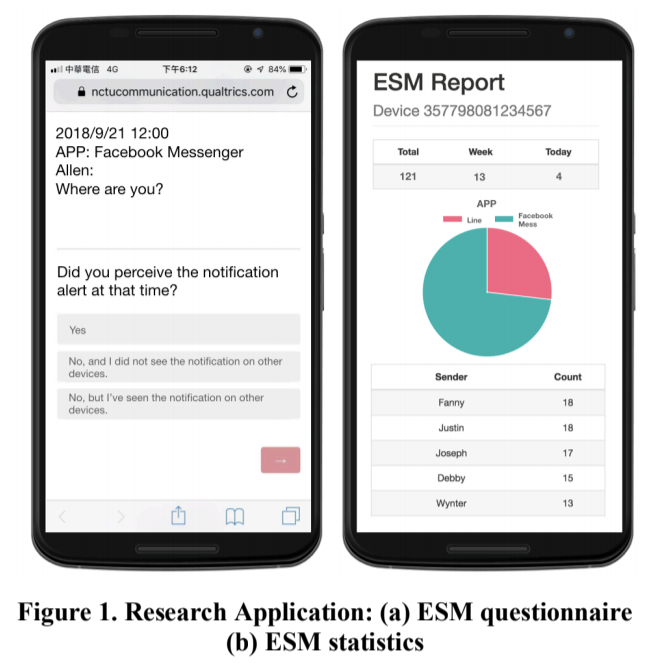

Who Matters
Understanding the Impact of Relationship Characteristics on Receptivity to Mobile IM Messages

Project Background : Research Project
Project date : 2017.12 - present
Project duration : 1 year
Project supervisor : Dr. "Stanley" Yung-Ju Chang
Authorship : Hao-Ping Lee, Kuan-Yin Chen, Chih-Heng Lin, Chia-Yu Chen, Yu-Lin Chung, Yung-Ju Chang, Chien Ru Sun
Submitted to CHI’19
A group project
What's the issue
Little research studies the impact of relationship characteristics between receivers and senders on users’ receptivity to mobile IM messages. The four receptivity measures we considered in this work are: Attentiveness, Responsiveness, Interruptibility, and Opportuneness Moment.
How we address the issue
In order to study the impact of relationship characteristics on users’ receptivity to mobile IM messages, we focus on a subset of characteristics of a relationship between two people that are measurable via self-reports and IM logs. They include Closeness, Dependence, Mobile Maintenance Expectation (MME), Answering Expectation (AE) and Perceived Obligation to Answering (POA).
Our general research question is: when considering activity context, social context, phone interaction context, and ringer mode, to what extent these measures of relationship characteristics respectively affect the four receptivity measures. We use four sources to obtain these measures: existing scales, self-report from the experience sampling method (ESM), sensor data from the phone, and message logs.
What we find
Our result shows that both relationship characteristics and interruption context matter to mobile IM receptivity. Interestingly, Mobile Maintenance Expectation and Activity Engagement are negatively correlated with all receptivity measures.
Interruptibility is correlated with Closeness and Phone Interaction Context and is uniquely affected by whether social contacts are present.
Opportune Moment is correlated with Closeness and Phone Interaction Context and is uniquely affected by Ringer Mode.
Attentiveness is correlated with Closeness and Phone Interaction Context and is additionally affected by Relationship Type.
Responsiveness seems to be highly distinctive from other receptivity measures. Answering Expectation is its unique predictor, which is not shared by other receptivity measures.
Each receptivity measures has its own set of predictors, showing conceptual differences among these measures.
What's my role in the project
I was in charge of designing and conducting the user research, also highly engaged in discussions throughout the design, implementation and quantitative data analysis.
Our following work, which is in progress now, aims to predict receptivity variables and relationship characteristics. We also include qualitative analysis to find more insights. I'm in charge of the qualitative analysis.
We implement Cued Retrospective Technique to conduct a semi-structured interview for participants. Then, a mixture of Grounded Theory and Evaluational Research is utilized to analyze the data. One of the findings is that people tend to respond less instantly toward some of the most intimate partners if they consider the relationship to be steady and solid, while they tend to reply more quickly toward someone less intimate, due to the obligation to answer, or in order to maintain the relationship.